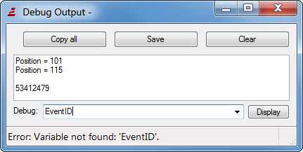
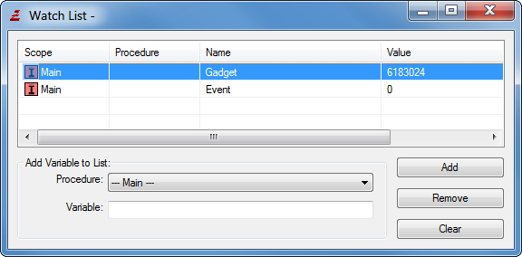
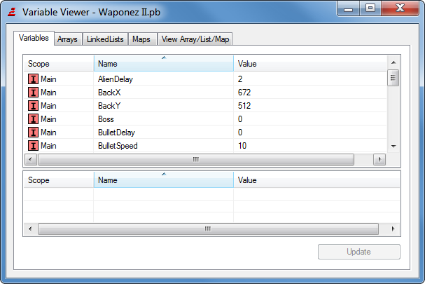
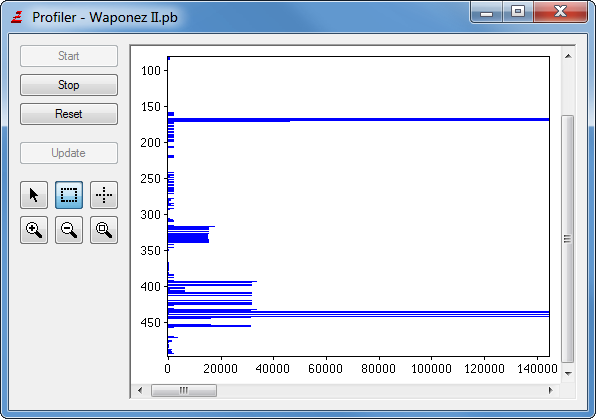
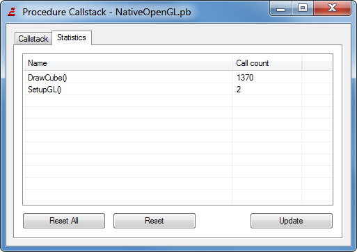
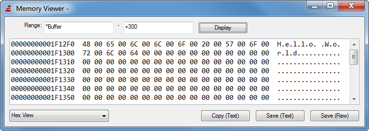
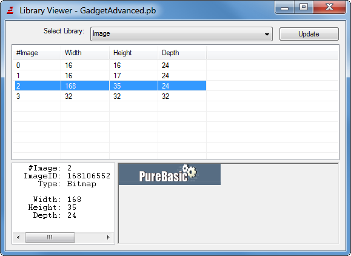
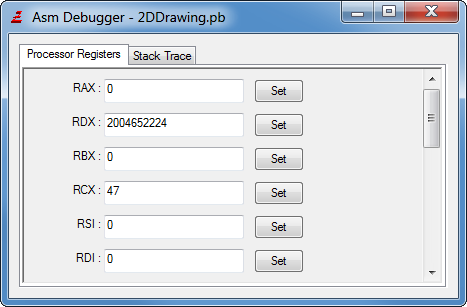
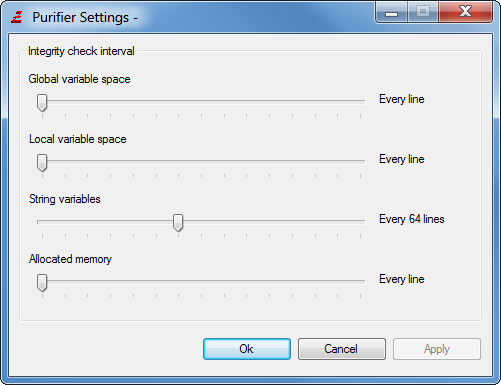

Included debugging tools
These tools provide many features to inspect your program while it is running. They can not be used while you are editing the source code. These tools are available in both the integrated Debugger and the standalone debugger. The console debugger provides many of these features too, but through a debugger console.| Byte | |
| Ascii | |
| Character | |
| Word | |
| Unicode | |
| Long | |
| Integer | |
| Quad | |
| Float | |
| Double | |
| String | |
| Fixed length string |
The Debug output window

In this window, the output of the Debug statement will be displayed. The Debug statement is a quick and simply way to print messages for debugging purposes.
The debug window will automatically open at the first output is produced by your program. If you then close it, it will not automatically open on subsequent messages, however they will still be logged. You can copy this output to the clipboard or save it to a file. There is also a button to clear the messages from the window.
The entry field at the bottom of the window allows an expression to be entered, which will be evaluated and the result printed in the output box. This allows to quickly check the state of variables or array fields without the need to look them up in one of the debugger tools. The evaluation is started by pressing Enter or clicking on the "Display" button. If the expression cannot be evaluated for some reason, an error-message is displayed in the statusbar.
The expression can be any valid PB expression (not including logical ones or containing PB keywords). It can contain variables, arrays, lists, constants and also some commands from the Math, Memory and String libraries.
The Watchlist

The watchlist can be used to track changes in variables of your program in real time, while the program is running. It can only display single variables (no full structures), however, these variables can be a part of structures. Elements of dynamic array, list or map inside structures can not be displayed in the watchlist.
To add a variable, select its procedure (if it is a local variable) or select "--- Main ---" if it is a global variable or part of an array or list. Then type the variable name, as you would access it in your source code into the Variable field and press Add.
Examples: MyVariable$ - add a normal string variable Array(1, 5) - add an array field Structure\subfield[5]\value – add a variable inside a structure MyList()\structuresubfield – add a variable inside a structured listYou can also add new watched variables from the VariableViewer, by right-clicking on them and selecting "add to watchlist"
In the list you will see the values of the watched variables. If the value is displayed as "---", it means that this variable is not valid at the current point in the source code; for example, this will occur if you watch a local variable, or a list element and the list has no current element.
The watched variables are remembered between the debugging sessions, and even saved with the compiler options, so you do not need to repopulate this list all the time.
The Variable Viewer

The Variable viewer allows to examine the program's variables, arrays, lists and maps. The individual tabs show global and threaded items in the top part and local, shared and static items in the bottom part.
The "Update" Button can be used to get the most recent data from the program. If the program is halted or in step mode, the content is updated on each step automatically. By right-clicking on any variable or Array/List field, you can copy that variable, or add it to the watchlist for real-time tracking of its value.
On Windows, the content of the Variable viewer can be sorted by name, scope or variable value by clicking on the header of the appropriate column.
The 'Variables' tab
This tab, shows the variables of the program. By right-clicking on a variable, it is possible to add it to the watchlist.
The 'Arrays' tab
This tab shows a list of all arrays in the program and the dimensions in which they are currently defined (-1 means that Dim was not called yet). By right-clicking on an array, the content of the array can be viewed in the "View Array/List/Map" tab.
The 'Lists' tab
This tab shows a list of all Lists, the number of elements they currently hold ( "-" indicates that NewList was not called yet), as well as the index of the current element of the list ( "-" indicates that there is no current element). By right-clicking on a list, the content of the list can be viewed in the "View Array/List/Map" tab.
The 'Maps' tab
This tab shows a list of all maps, the number of elements they currently hold ( "-" indicates that NewMap was not called yet), as well as the key of the current element of the map ( "-" indicates that there is no current element). By right-clicking on a map, the content of the map can be viewed in the "View Array/List/Map" tab.
The 'View Array/List/Map' tab
This tab can be used to view individual entries of an array, a list or a map. This includes arrays, lists or maps inside structures as well. To do so enter the name of the array, map or list including a "()" at the end, select what kind of items to display and press "Display". Note that the content of the display is not automatically updated when the program is in step mode.
"Display all items" simply displays everything. "Display Non-zero items only" will only display those items that do not hold the value 0 or an empty string. This makes viewing large arrays/lists with only few valid items in them simpler. A structure is considered "zero" if all of its items either hold the value 0 or an empty string.
"Display Range" allows displaying only a specific range of an array, a list or a map. The range can be given for each Array dimension individually, separated by commas. If one dimension is not specified at all, all of its items will be displayed. Here are a few examples for valid range input:"1-2, 2-5, 2" : first index between 1 and 2, a second index between 2 and 5 and a third index of 2. "1, 2-5" : first index of 1 and a second index between 2 and 5. "1, , 5" : first index of 1, any second index and a third index of 5.For list display, the "Display Range" option can be used to display a range of list elements by their index (zero based)."0" : first element "1-3" : second to the fourth elementFor map display, the "Display Range" option can be used to filter the keys to be displayed. It has to contain a mask for the key string of the map elements (no quotation marks). A "?" matches one character, a "*" matches any number of characters. Here are a few examples for valid mask input:"hat" : matches only the item with "hat" as key. "?at" : matches items with "hat", "bat" etc as key. "h*t" : matches items with keys that start with "h" and end with "t" and anything in between.
The Profiler

The profiler tool can count how often each line in the source code is executed. This collected data can be used to identify which portions of the code are used most often and where improvements make most sense. It also helps to identify problems where a piece of the code is executed too often as a result of an error.
Recording the data
The recording of the data can be controlled by the Start, Stop and Reset (to set all counts to 0) buttons in the profiler window. The Update button can be used to update the graph while the program is running. Each time the program is halted or in step mode, the data is updated automatically. By default, the profiler is recording data from the start of the program. This can be changed in the Preferences.
Examining the data
The recorded data is displayed as a graph, with the vertical axis showing the source line number and the horizontal axis showing how often the lines were executed. If the running program consists of more than one source file, a list of source files is presented below the graph. To display the graph for a file either select it, or check its checkbox. Multiple files can be shown in the graph at once to better compare them. Right-clicking on one of the filenames allows changing the color used to display that file in the graph.
Mouse modes in the graph
Right-clicking inside the graph brings up a popupmenu which allows zooming in or out or to show the source line that was clicked on in the IDE or code display of the debugger. The action taken by a left-click can be controlled by the buttons on the left side:
Left-clicking and dragging allows to scroll the graph display. Left-clicking and dragging allows selecting an area which will be zoomed in. While this button is activated, moving the mouse on the graph displays a crosshair to better identify the line and call count under the mouse. Zoom in Zoom out Zoom out so all lines can be viewed
The Callstack viewer

The callstack viewer shows which nested procedure calls led to the current position in the code. Each entry in the list means one procedure that is currently open. It shows the line and file from which it was called, and the arguments used to call the procedure. By clicking on the Variables button for each procedure, you can look at the variables of that instance of the procedure.
This allows to easily trace, from which part of the code, a procedure was called. The callstack view does only automatically update when you stop the program, or use Step to execute single lines. While the program is running, you have to use the Update button to update the view for the current code position.
The "Statistics" tab shows the number of times each procedure in the code was called. You can reset the count for all procedures with "Reset all", or for the currently marked entry with the "Reset" button. Like with the callstack, the updates are not automatic while the program is not stopped. Use the Update button for that.
The Memory Viewer

The memory viewer lets you view a memory area in your program. The range to view can be entered into the range fields as any valid PureBasic expression; this can be a normal decimal value, a hex number preceded by the ’$’ character or any other valid expression, including variables or pointers from the code. If the content of the second range field starts with a "+" sign, the content is interpreted as relative to the first field.
Example: "*Buffer + 10" to "+30" will display the 30 bytes of memory starting at the location 10 bytes after what *Buffer points to.
If the memory area is valid for viewing, it will be displayed in the area below. If parts of the area are not valid for reading, you will get an error-message. The type of display can be changed with the combo box in the lower left corner. The following view modes are available:
Hex View
The memory will be displayed like in any hex viewer, giving the memory location in hex display on the left, followed by the hexadecimal byte values, and then the string representation in the right column.
Byte/Character/Word/Long/Quad/Float/Double table
The memory area will be shown as a table of the specified variable type. Whether or not this table is single-column or multi-column can be set in the Preferences (see Configuring the IDE).
String view
This displays the memory area as a string, with any non-string characters displayed in [] (for example "[NULL]" for the 0 byte.) A linebreak is added after newline characters and [NULL] to improve the readability of the output. The memory area can be interpreted as an Ascii, Unicode or Utf8 string.
You can also export the viewed memory area from the memory viewer:
Copy (Text): Copies the displayed area as text to the clipboard.
Save (Text): Saves the displayed area as text to a file.
Save (Raw): Saves the memory area as raw binary to a file.
The Library Viewer

The Library Viewer provides information about the objects created by some libraries. For example, it allows to quickly check which images are currently loaded in the program, or which gadgets are created.
Once the program is started, the combobox on top of the window can be used to select the library to view. The list below will then show all objects of the library that currently exist in the executable along with some additional information on each object. The "Update" button will update this list of objects. Selecting an object in the list will display more detailed information about it in the text area on the left, and if supported by the library also a visual display of the object on the right (for Images, Sprites, and so on).
If the combobox displays "No Information", this means that your executable has used no library that supports this feature.
Currently, the Library Viewer is supported by the following libraries:
Thread
Gadget
Window
File
Image
Sprite
XML
The Assembly Debugger

The ASM debugger is provided for advanced programmers to examine and change the CPU register content and to examine the programs stack for debugging of inline ASM code.
The Processor Register view is only available while the program execution is halted. By changing any of the register values and clicking "Set", you can modify the value in that register.
The Stack trace shows the content of the programs stack given in relation to the ESP register. If the current stack position is not aligned at a 4 byte boundary, there can be no information given about the content of the stack. In this case the stack is shown as a hex display.
If the stack pointer is properly aligned, the stack contents are displayed with comments about the meaning of the contained values (detailing the pushed registers and other values on a PureBasic procedure call).
The stack trace is updated automatically when you stop the execution or step though the program, unless you specify otherwise in the Preferences. If you disable the automatic update, there will be an "Update" button displayed to do so manually.
Note: The Assembly debugger is currently not available on MacOS X.
The Purifier

The purifier can detect memory errors such as writing past the end of an allocated memory buffer or string. Without the purifier some of these mistakes would lead to crashes and others would go unnoticed because the write operation overwrites some other valid memory.
The purifier requires special output from the compiler to work, which is why it is only available if the "Enable Purifier" option is set in the compiler options when the program is compiled.
The purifier detects these errors by placing a special 'salt'-value around global and local variables, strings and allocated memory buffers. These salt values are then checked at regular intervals and an error is displayed if they were changed. These checks slow down the program execution considerably especially for large programs, which is why the rate at which the checks are performed can be specified in the purifier window:
Global variable space
Defines the interval in source lines after which the global variables are checked.
Local variable space
Defines the interval in source lines after which the local variables are checked.
String variables
Defines the interval in source lines after which the memory used by string variables is checked.
Allocated memory
Defines the interval in source lines after which the memory allocated by AllocateMemory() is checked.